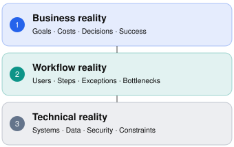

Intermediate
75–90 min
Customer discovery
Chapter overview
A bank's operations director joins your first customer meeting and says:
"We need an AI agent that automatically reviews financial documents. Our current process is too slow, and leadership wants a demo in four weeks."
You're the Forward Deployed Engineer assigned to the engagement.
You could immediately ask which LLM the bank wants, whether its documents are PDFs, and what cloud infrastructure it uses.
Those questions may eventually matter. But they're not the best starting point.
You don't yet know why the process is slow, how it works today, what errors cost the business, which decisions require human approval, or what a successful pilot would actually prove.
Discovery is the process of turning a customer's description of a problem into a shared, evidence-based understanding of what needs to change.
For an FDE, discovery is not just a sales conversation. It is the beginning of technical design, delivery planning, risk management, and customer trust.
This chapter follows a fictional financial-services engagement, building on Meridian Bank from earlier chapters.
Learning objectives
By the end of this chapter, learners should be able to:
Prepare for a discovery call with a clear agenda and hypotheses.
Ask open-ended questions that reveal workflows, pain points, and measurable business impact.
Distinguish customer requests from underlying requirements.
Conduct discovery with business, technical, and security stakeholders.
Recognize hidden assumptions, conflicting priorities, and missing evidence.
Close a call with clear decisions, owners, and next steps.
Produce a concise discovery brief that supports technical scoping.
7.1 Discovery is not a product demonstration
A common mistake among technically strong engineers is moving to solution design too quickly.
A customer mentions document processing, and the engineer starts describing OCR, embeddings, agents, or model orchestration.
The customer may be impressed. But the conversation can become anchored to a technical approach before anyone understands the underlying workflow.
Solution-first conversation
"Do you want us to use GPT, Claude, or an open-source model?"
"Should we build a React dashboard?"
"Do you have a vector database?"
Discovery-first conversation
"Walk me through the last document package your team reviewed."
"Where does the process slow down?"
"What happens when a document contains conflicting information?"
The second conversation produces information that can influence architecture, scope, evaluation, and user experience.
The three layers of customer discovery

Effective discovery connects all three layers before committing to a solution. They can be investigated in parallel, but none should be ignored.For example, a document extraction model could achieve excellent field accuracy and still fail to deliver value if analysts must spend more time correcting its output than they previously spent entering data.
The goal is not merely to prove that a model works. It's to prove that the customer's workflow improves.
7.2 Preparing for a discovery call
Good discovery begins before the meeting.
An FDE should enter the call with enough context to ask informed questions, but not so many assumptions that the conversation becomes a confirmation exercise.
Step 1 — Research the customer's environment
Review information legitimately available to your team: customer-provided architecture, existing support tickets, prior meeting notes, approved technical documentation, and public company information.
Look for the customer's industry, major workflows, existing software, likely constraints, and stated business objectives.
Do not assume that public information accurately reflects the customer's internal architecture.
Step 2 — Identify the stakeholders
For Meridian Bank, the call might include:
Stakeholder | Primary concern |
|---|---|
Operations director | Reduce review time and backlog |
Credit analyst | Maintain accuracy and avoid extra manual work |
Engineering lead | Integrate with existing systems |
Security representative | Protect sensitive customer information |
Business sponsor | Demonstrate measurable pilot value |
Different stakeholders may describe the same problem differently.
The operations director may see a throughput problem. The analyst may see poor document quality. The engineer may see unreliable integrations.
The FDE needs to reconcile these perspectives rather than choosing the loudest voice.
Step 3 — Prepare hypotheses, not conclusions
A useful preparation note might say:
Hypothesis | Evidence needed |
|---|---|
Manual data entry is the main bottleneck | Observe actual review workflow |
Document quality causes delays | Examine representative failure categories |
An AI-assisted workflow can reduce review time | Baseline timings and pilot evaluations |
Existing APIs can support the integration | Documentation and technical validation |
A hypothesis tells you what to investigate.
A conclusion tells you what you believe is true.
Entering discovery with hypotheses helps you remain open to contradictory evidence.
Step 4 — Send a focused agenda
A 45-minute first call could look like this:
Suggested discovery agenda
0–5 min
Introductions and meeting goals
5–15 min
Business problem and impact
15–30 min
Current workflow and exceptions
30–40 min
Systems, constraints, and unknowns
40–45 min
Recap and next steps
The agenda should make clear that the meeting is exploratory, not a promise to finalize architecture or scope.
7.3 The art of asking better questions
A discovery question should produce useful evidence, not merely an agreeable answer.
Y Combinator's Eric Migicovsky emphasizes discussing real experiences, asking about specific past events, and listening instead of pitching. Atlassian's customer interview guide similarly recommends avoiding leading and yes/no questions when exploring customer behavior.
Weak questions vs. strong questions
Weak question | Stronger alternative |
|---|---|
"Would AI help your team?" | "Which tasks consume the most time today?" |
"Do you need real-time processing?" | "How quickly must a result be available to support the next decision?" |
"Is your API reliable?" | "What integration failures occurred in the last month?" |
"Would you use this feature?" | "What do you currently do when this situation occurs?" |
"Can we finish in four weeks?" | "What must be demonstrated in four weeks, and what approvals are required?" |
"Is accuracy important?" | "What happens when a reviewer misses an incorrect value?" |
Strong discovery questions are specific, neutral, and anchored in actual workflows.
Six question categories every FDE should master
01
Business outcomes
What business decision or process are you trying to improve?
Establishes why the engagement matters.
02
Current-state workflow
Can you walk me through the last time your team completed this task?
Reveals actual steps, tools, and handoffs.
03
Pain and exceptions
Where does the process break down, and what happens next?
Exposes bottlenecks and edge cases.
04
Quantification
How often does this happen, and how much time or money does it consume?
Provides a baseline for measuring value.
05
Constraints
Which systems, policies, or dependencies would limit a solution?
Identifies feasibility and delivery risks.
06
Success and ownership
Who will decide whether the pilot succeeded, and based on what evidence?
Clarifies acceptance and decision authority.
Follow-up questions are often more valuable than prepared questions
Suppose an analyst says:
"Sometimes the documents are bad, and we have to redo everything."
Instead of moving to the next agenda item, investigate:
What does bad mean—unreadable scans, missing pages, conflicting values, or something else?
Can you describe the most recent example?
How did you identify the issue?
How long did correction take?
What would have happened if nobody caught it?
The first answer identifies a vague problem. The follow-ups reveal potential requirements, exception handling, and evaluation criteria.
7.4 Realistic discovery call transcript
The following is a fictional, condensed transcript of a 45-minute initial meeting. It illustrates how an FDE can uncover the underlying problem without turning the call into a technical pitch.
Meridian Bank — Discovery call
Illustrative transcript
FDE · Maya
00:00
Thanks for joining. My goal today is to understand the document review workflow, where delays occur, and what success would mean for your team. We can discuss possible approaches, but I don't want to assume AI is necessarily the answer.
Operations Director · Sarah
02:30
Our analysts spend too much time reviewing financial documents. We want an AI agent to automate the process.
FDE · Maya
04:00
Could you walk me through a recent application, from receiving the documents to completing the review?
Credit Analyst · Daniel
06:00
We receive PDFs by email or through the customer portal. We open them, extract numbers into a spreadsheet, and compare those numbers against the application. Then we flag discrepancies.
FDE · Maya
09:00
Which part tends to take the longest?
Credit Analyst · Daniel
10:00
Entering the figures. But missing pages and inconsistent financial statements slow us down even more.
FDE · Maya
12:00
How do you handle missing or contradictory information today?
Credit Analyst · Daniel
13:00
We stop the review, contact the relationship manager, and request clarification. We can't approve the package until the discrepancy is resolved.
FDE · Maya
16:00
Roughly how many packages do you review each week, and what's the typical review time?
Operations Director · Sarah
17:00
Around 200 packages. We think a normal one takes about 45 minutes, although we haven't measured that recently.
FDE · Maya
19:00
That's a useful starting estimate. Could we sample recent cases to confirm the baseline and see how much time is spent on each step?
Engineering Lead · Priya
23:00
We also need the results written back into our internal loan system. We have an API, but some fields are only available through an older integration.
FDE · Maya
25:00
Can we review the API specification and test environment with your team? I'd like to identify the missing fields before proposing an architecture.
Security Lead · Marcus
30:00
Any customer financial data must remain in approved environments. External processing requires formal review.
FDE · Maya
32:00
Understood. We won't assume any model or hosting option is approved. Let's arrange a separate session to confirm permitted data flows, retention requirements, and deployment boundaries.
Operations Director · Sarah
37:00
Leadership still wants a demonstration in four weeks.
FDE · Maya
39:00
For that milestone, would a controlled demonstration of extracting and flagging values, with analyst review, meet the immediate objective? We should confirm feasibility and security requirements before committing to the scope.
Operations Director · Sarah
40:00
That could work, as long as we can show meaningful time savings.
FDE · Maya
43:00
I'll summarize what we've learned, the assumptions we need to validate, and the decisions needed before we finalize a pilot plan.
What Maya did well
She resisted committing to a technology before understanding the workflow. She invited an actual analyst to describe the process rather than relying solely on the business sponsor. She distinguished the estimated baseline from a verified measurement.
She also identified a legacy integration dependency, a security approval dependency, and a possible four-week demonstration scope.
What Maya still needs to investigate
The call did not establish everything.
For example, the team still needs to determine document types, representative error cases, the precise accuracy requirement, the available data, and the ownership of human review.
The discovery call produced a stronger understanding—not a complete specification.
7.5 Converting a conversation into actionable findings
A discovery call is only valuable if the information is captured and used.
A practical technique is to separate confirmed observations, customer statements, assumptions, risks, and actions.
Discovery brief — Meridian Bank
Example output based on the fictional transcript
Category | Finding |
|---|---|
Business problem | Financial document reviews take too long |
Current workflow | Receive documents → enter figures → reconcile → flag discrepancies |
Reported volume | Approximately 200 packages/week; unverified |
Reported baseline | Approximately 45 minutes/package; unverified |
Candidate pilot | Assisted extraction and discrepancy flagging with analyst review |
Technical dependency | Internal loan API and legacy integration |
Security dependency | Approved processing environment and data-flow review |
Success criterion | Meaningful review-time reduction; exact target pending |
Key unknowns | Document variability, error rates, access, feasibility |
Translate discoveries into action items
Action | Suggested owner | Purpose |
|---|---|---|
Sample recent reviews and measure timings | Operations | Verify baseline |
Provide sanitized representative documents | Customer data owner | Evaluate feasibility |
Share approved API documentation | Engineering | Validate integration |
Confirm permitted data flows | Security | Establish deployment constraints |
Agree on pilot acceptance criteria | Business sponsor + FDE | Prevent ambiguous success |
These owners are illustrative and must be agreed upon with the customer.
Never turn an inferred action into a claimed customer commitment without confirmation.
7.6 Handling difficult discovery situations
Situation A — The executive dominates the conversation
The executive repeatedly describes what the solution should do, while the actual users remain silent.
A useful response:
"That gives us a clear picture of the business objective. I'd also like to hear from someone who performs this process every day. Could we walk through a recent case from the analyst's perspective?"
This acknowledges the sponsor without treating executive assumptions as operational facts.
Situation B — Stakeholders disagree
Operations wants maximum automation. Compliance insists that humans review every exception.
Rather than choosing a side, clarify which decisions can be automated, which require approval, and who has authority to define the control requirements.
The conflict may reveal an important product boundary.
Situation C — The customer demands a timeline
The sponsor asks, "Can you deliver this in four weeks?"
Avoid committing before understanding the scope and dependencies.
A better response is:
"We can evaluate what fits within four weeks. First, we need to confirm the required workflow, representative data, integration access, and approvals. Then we can propose a credible pilot milestone."
Situation D — The customer cannot quantify the problem
A stakeholder says, "We waste a lot of time."
Don't invent an ROI estimate.
Ask whether the team can sample recent cases, review operational logs, or run a short time study to establish a baseline.
Situation E — The customer asks for an AI solution that may not be necessary
The customer wants an autonomous agent to copy data from one system into another.
If the task is deterministic and both systems expose stable APIs, conventional integration software may be more reliable and economical.
An FDE should explain the trade-off and recommend the approach best suited to the workflow.
7.7 Common discovery mistakes
Pitching before understanding
The conversation becomes about product features rather than customer needs.
Better approach: Ask for a recent real example before presenting a solution.
Asking leading questions
Stakeholders may agree with your framing rather than describe their experience.
Better approach: Use neutral questions and request concrete evidence.
Speaking only to leadership
Critical workflow details and exceptions remain hidden.
Better approach: Include users and system owners in follow-up discovery.
Confusing estimates with facts
Unverified numbers become architecture or ROI assumptions.
Better approach: Label estimates and assign validation actions.
Ignoring constraints
The proposed solution may violate security, data, or operational requirements.
Better approach: Involve relevant control owners early.
Ending without a recap
Participants leave with different understandings of scope and next steps.
Better approach: Summarize findings, uncertainties, decisions, and owners.
A particularly subtle mistake is using a customer's enthusiasm as evidence that a solution will succeed.
Positive feedback is useful, but stronger evidence comes from observed workflows, representative data, actual constraints, and measurable pilot results.
7.8 Recommended learning resources
The following links have been checked against the original video, publisher, or organization pages.
WATCH · REQUIRED · 31 MIN
How to Talk to Users — Eric Migicovsky
Y Combinator · Startup School
Focus on 02:43–14:16 for the most useful interview techniques: past behavior, specific incidents, and avoiding leading questions.
READ · REQUIRED · PRACTICAL GUIDE
How To Do a Customer Interview
Atlassian Team Playbook
Covers preparation, question design, interview execution, and synthesis. Particularly useful for structuring a real customer interview.
READ · OPTIONAL · BOOK
The Mom Test — Rob FitzpatrickSource link needs rechecking. See the resource directory for details.Updated publisher resource ↗
Official publisher page
A deeper treatment of customer conversations, misleading compliments, and questions designed to reveal real behavior. The full book is a paid resource; the linked page is its official description.
READ / REVIEW · OPTIONAL · LECTURE SLIDES
How to Talk to Users — Lecture Slides and Transcript
YC Startup School presentation mirror
Useful for revisiting the five interview questions and taking structured notes alongside the original video.
Learning assignment
Watch the Y Combinator lecture, then rewrite five common technical discovery questions so they investigate real customer behavior instead of asking for preferences about hypothetical features.
For example, replace "Would you use an AI search assistant?" with "Tell me about the last time you couldn't find the information needed to complete a task."
7.9 Interactive practice — Improve the discovery question
Choose the best question for each situation and examine why it works.
Discovery question lab
1 of 4
A support director says ticket resolution is too slow.
Which question would produce the most useful discovery evidence?
Would an AI chatbot solve this?
Can you walk me through the most recent ticket that took unusually long?
Which LLM provider do you prefer?
7.10 Practical exercise — Lead a discovery call
Exercise 7.1: The customer discovery simulation
25–30 min
Scenario: Northstar Logistics
You're the FDE assigned to a logistics company. Its COO has requested an AI agent to reduce shipment exception handling time.
What you know before the meeting:
Approximately 5,000 shipments are processed each day.
Exceptions are tracked in spreadsheets and a legacy transportation management system.
The COO says employees waste several hours daily.
Customer service representatives and dispatchers both participate.
Leadership wants a pilot within six weeks.
No reliable baseline or exception taxonomy has been provided.
Your assignment is to prepare the opening of a discovery call, ask at least six questions, identify missing stakeholders, and explain how you would close the meeting.
Auto-saved on this device. Review your answer for customer impact, evidence, assumptions, ownership, and a clear next step.
Exercise 7.2 — Write a discovery brief
Using the fictional Meridian Bank transcript, produce a one-page brief containing the problem statement, current workflow, stakeholders, preliminary metrics, constraints, risks, unknowns, and next actions.
Auto-saved on this device. Review your answer for customer impact, evidence, assumptions, ownership, and a clear next step.
Target: approximately one page
7.11 Knowledge check
7.12 Chapter summary
Effective customer discovery is a disciplined engineering activity.
The most important lessons are:
Understand before proposing. A customer's preferred technology is not automatically the correct solution.
Ask about actual behavior. Specific examples reveal more than hypothetical preferences.
Interview the right people. Business sponsors, frontline users, engineers, and control owners contribute different perspectives.
Quantify the problem. Establish baselines before promising improvements.
Separate facts from assumptions. Unverified statements should lead to validation activities.
Respect technical and organizational constraints. Security, integration access, and approval processes can determine feasibility.
Finish with alignment. A discovery call should produce clear findings, open questions, decisions, and next steps.
The central principle:
A great FDE doesn't leave discovery with a solution they are excited to build. They leave with a customer problem they understand well enough to solve responsibly.
UP NEXT · MODULE 02 / CHAPTER 08
Turning Ambiguous Problems Into Requirements
We'll learn how to transform discovery findings into functional and nonfunctional requirements, acceptance criteria, user stories, integration contracts, assumptions, and scope boundaries.
The chapter will include a requirements workshop, a traceability exercise, a realistic enterprise case study, verified resources, and an interactive quiz.
Field notes
Capture the idea you will use in your next customer conversation.